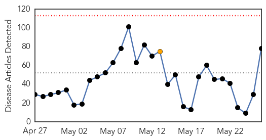
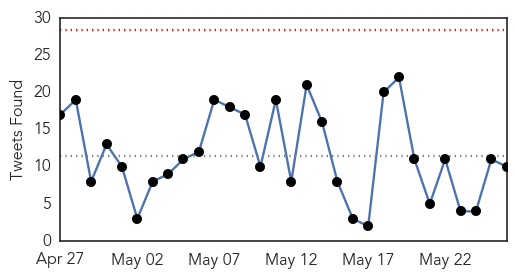

Pertussis
30-Day Web Trend
0 alerts, 0 warnings
30-Day Twitter Trend
0 alerts, 0 warnings

Article Locations
Article Confidences
Top Articles:
Top Tweets:
-
No tweets found for May 26, 2015
Ebola
30-Day Web Trend
0 alerts, 1 warnings

30-Day Twitter Trend
0 alerts, 0 warnings

Article Locations
Article Confidences
Top Articles:
- 1.000
- Why there’s no need to panic over Lassa fever. It’s Ebola-like, but it’s not Ebola.
- 1.000
- What Is Lassa Fever? 5 Things To Know About Rare African Viral Disease Found In New Jersey
- 0.999
- Lassa fever death in New Jersey recalls Ebola death in Texas
- 0.999
- N.J. patient dies of Ebola-like Lassa fever after Liberia trip
- 0.999
- Man traveling to U.S. from Liberia dies from Lassa fever -CDC
- 0.999
- New Jersey Lassa Fever Death Prompts C.D.C. Action
- 0.999
- Man in New Jersey Dies of Rare Viral Disease After Returning From Liberia
- 0.999
- Hospital in Westchester Testing Patient for Ebola: Officials
- 0.999
- Lassa Fever Death in New Jersey
- 0.999
- N.J. patient dies of Ebola-like Lassa fever after Liberia trip
- 0.999
- U.S. Traveler Returning From Liberia Dies of Lassa Fever
- 0.999
- Person who traveled from Liberia to John F. Kennedy Airport died of Lassa fever
- 0.998
- Essex County man diagnosed with Lassa fever dies after Liberia trip
- 0.998
- Essex County man diagnosed with Lassa fever dies after Liberia trip
- 0.998
- Lassa fever confirmed in death of U.S. traveler returning from Liberia
- 0.998
- Lassa Fever Confirmed in Death of U.S. Traveler Returning from Liberia
- 0.998
- Ebola: The Overlooked Sexually Transmitted Disease
- 0.998
- Lassa Fever Kills New Jersey Man Days After He Returns From Liberia
- 0.998
- Lassa Fever Confirmed in Death of U.S. Traveler Returning from Liberia
- 0.998
- How Worried Should We Be About Lassa Fever?
- 0.998
- Man diagnosed with Lassa fever dies in US after Liberia trip
- 0.998
- U.S. man returning from Liberia dies of Ebola-like Lassa fever - Xinhua
- 0.997
- How Worried Should We Be About Lassa Fever?
- 0.997
- New Jersey man DIES of ebola-like Lassa fever caught in Libera
- 0.997
- Hospitals That Treated Man With Deadly Infectious Disease From West Africa Identified
- 0.996
- Sierra Leoneans mark year since 1st Ebola case
- 0.996
- Patient in N.J. dies of Lassa Fever
- 0.996
- U.S. man who returned from West Africa dies from Lassa fever
- 0.996
- Man diagnosed with Lassa fever dies in U.S. after trip to Liberia
- 0.996
- Health officials investigating after New Jersey man dies of Lassa fever …
- 0.996
- Sierra Leone marks grim Ebola anniversary
- 0.996
- Lassa fever found to be cause of death for person who came back to US from Liberia
- 0.995
- US man dies from Lassa fever
- 0.995
- UMass Medical School Ebola fighters honored for lifesaving work in Liberia
- 0.995
- S/Africa, Japan lift travel bans on Liberia
- 0.995
- Ebola 2.0? NJ Man Dies of Lassa Fever, Ebola's Less Deadly Cousin
- 0.995
- Man diagnosed with Lassa fever dies in US after Liberia trip
- 0.995
- Is Lassa Fever the New Ebola? CDC Officials Investigating Death of NJ Man
- 0.995
- Man with Rare West African Disease Dies in U.S.
- 0.995
- Man diagnosed with Lassa fever dies in US after Liberia trip
- 0.995
- US man dies from Lassa fever
- 0.994
- US man dies from Lassa fever
- 0.993
- New Jersey man dies of Lassa fever after trip to West Africa
- 0.993
- Man Dies of Rare African Virus in New Jersey
- 0.993
- New Jersey man dies of Lassa fever after returning from Liberia
- 0.992
- Man diagnosed with Lassa fever dies in US after Liberia trip
- 0.992
- Patient being tested for disease at St. Joseph's hospital
- 0.990
- New Jersey Man Dies Of Viral Hemorrhagic Fever After Liberia Trip
- 0.988
- Ebola 2.0? NJ Man Dies of Lassa Fever, Ebola’s Less Deadly Cousin
- 0.987
- Statements Made One Year On
Showing top 50 articles...
Top Tweets:
- 0.944
- .@BBCWorld maps the Ebola outbreak in West Africa that claimed over 11K lives http://t.co/SiCnjwRtZw
- 0.879
- The Ebola Outbreak in Comparison: Liberia and Côted’Ivoire http://t.co/f66yDiy596
- 0.868
- kamara soutient l'Afrique contre Ebola AfricaAgainstEbola onstensemble afdbam2015 https://t.co/axc4C95sNW
- 0.828
- has announced that Liberia can stage int'l matches again after being declared free of the Ebola virus. africaagainstebola
- 0.794
- China's positive role in Ebola crisis applauded - Xinhua http://t.co/FdwbDyVXQJ ebola EVD
- 0.782
- LearningLessons Of Ebola: Why Spread Of Disease Is About More Than Just Health - Analysis http://t.co/Je4Ifygv84
- 0.773
- The Ebola epidemic is ongoing in West Africa and responses from China are positive http://t.co/gbehzdYe3R
- 0.756
- UMass Medical School Ebola fighters honored for lifesaving work in Liberia - News from the Univers... http://t.co/O2ysDfOiGq ebola EVD
- 0.756
- Guinee. Le point de la situation d'Ebola à Boké, 22 mai 2015 @GuineeConakryI http://t.co/rXJnK4iWdn
- 0.717
- UNMEER critiquée pour la profusion de ses postes de direction et demande 100 millions de dollars de trop Ebola http://t.co/5As9qTriDz
- 0.711
- Lassa fever death in New Jersey recalls Ebola death in Texas - Washington Post http://t.co/ENi71Z1ViO ebola EVD
- 0.711
- Lassa fever death in New Jersey recalls Ebola death in Texas - Washington Post http://t.co/DpEnhbrfuO ebola EVD
- 0.653
- Allyn: Ebola work of Army medical researchers saved lives - United States Army (press release) http://t.co/OxHKejPBXc ebola EVD
- 0.601
- has warned that the fight against Ebola is not over. Africaagainstebola t Read more http://t.co/cDI4YCF1hi AfDBAM2015
- 0.535
- Preventing Pandemics: Ebola and the Global Health SupplyChain @StimsonCenter http://t.co/JX8cxMhOE0
- 0.520
- 26 May - news pouch on avianflu avianinfluenza Ebola EbolaResponse MERS NepalQuake WHA68 is here: http:// http://t.co/j96uAqBakG
- 0.513
- Sierra Leone's Prisons - Tough, but Ebola-Free http://t.co/hnxTKxdaCO via
- 0.503
- Ebola prevention must continue until we reach zero cases in every country. EbolaResponse http://t.co/M8UslDNv5n